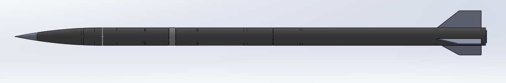
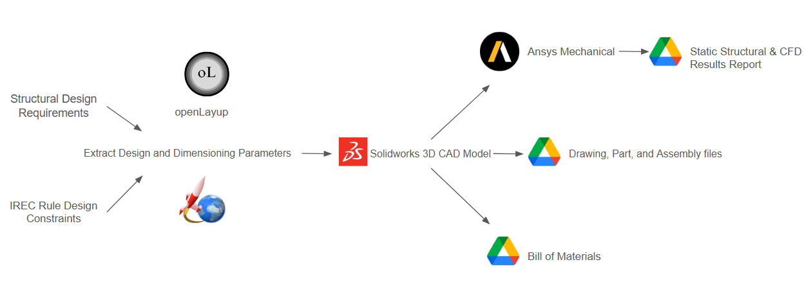

As the Structures Lead for the 2024-2025 IGNITORS team, I am leading the structural development of a 10K COTS rocket featuring a student-developed design with a hybrid propulsion system. Despite the team being founded in November, we have rapidly progressed in designing a prototype, securing sponsorships, and actively sourcing materials for our upcoming test launch at the IREC competition this June.

Using flight simulation software such as OpenRocket, RockSim, and RASAero, we conduct aerodynamic modeling, trajectory prediction, and stability analysis to refine our design. Our team utilizes Solidworks to design the rocket's airframe, fins, bulkheads, and centering rings to ensure proper integration with propulsion, avionics, and recovery systems. FEA is done with ANSYS to perform stress analysis to optimize material distribution and structural integrity. The rocket's airframe consists of G12 fiberglass composite commercially sourced for our design. Future iterations will use an in-house prepreg layup process to achieve tailored mechanical properties. Fins and bulkheads consist of G10 Fiberglass laminates that are CNC machined with a Water Jet cutter. Centering rings are 3D printed with PETG filament. Structural bonding is done with West Systems 105 epoxy/206 hardener and coupler tubes.
As one of the founding members of the Texas A&M IGNITORS Rocketry Team, I led the structural subsystem by establishing the design pipeline and assembly procedures for our launch vehicle. I trained team members in CAD (SolidWorks), finite element analysis (ANSYS), and composite material modeling. This included instruction on Classical Lamination Theory (CLT), the Tsai-Wu failure criterion, and additional failure frameworks used to predict laminate behavior under multiaxial loading. My contributions enabled the team to develop robust composite structures and laid the groundwork for future design standardization and performance validation.
